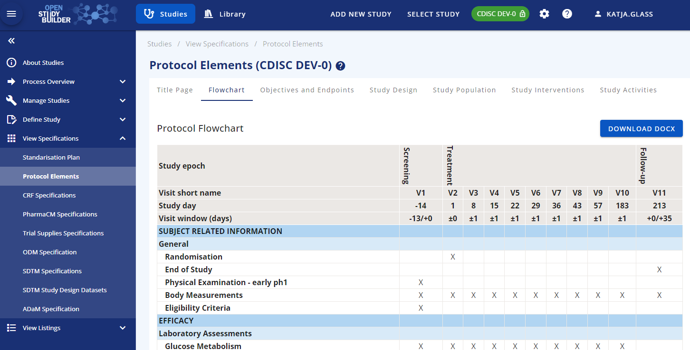
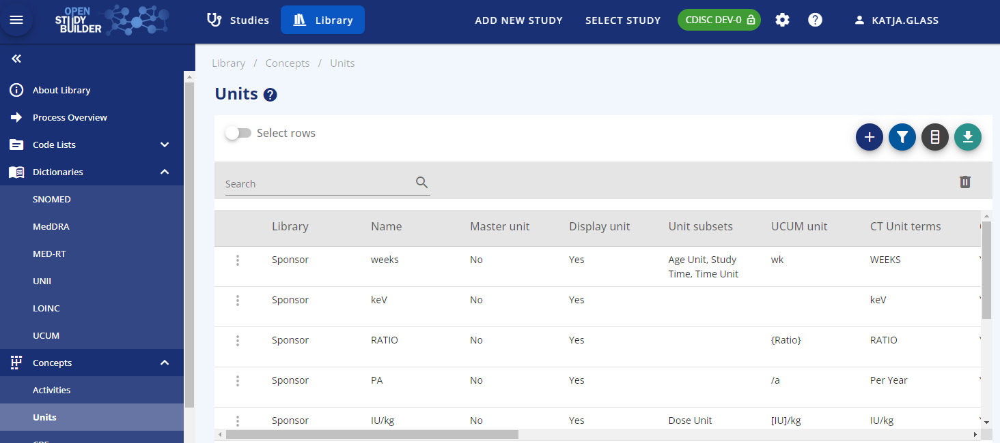
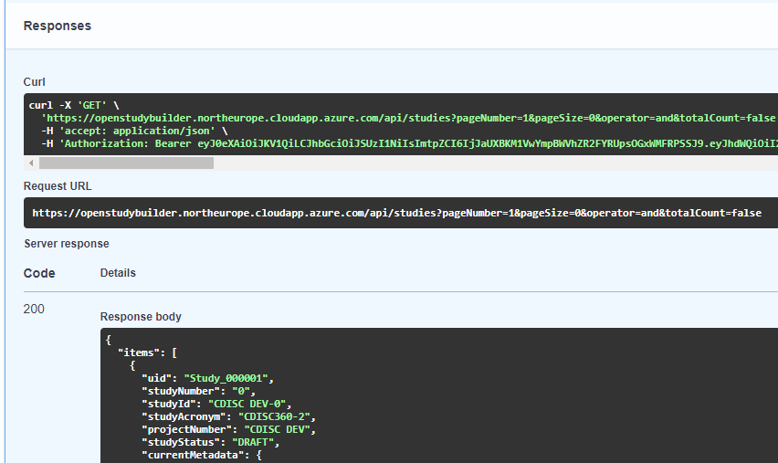
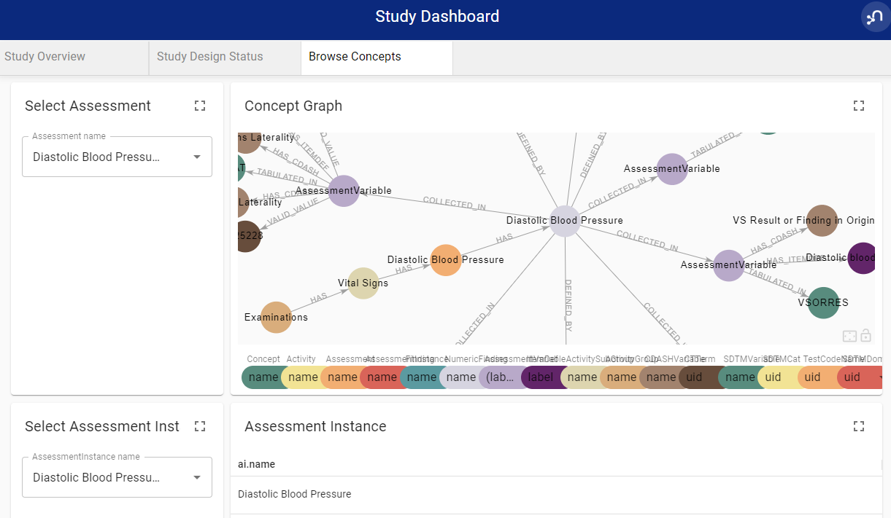

Environments¶
(updated 2026-02-25)
There are various ways how you can access the OpenStudyBuilder solution as a running application. The following options are documented:
- Sandbox system (public playground, no installation)
- Local docker installation (own build or pre-build)
- HELM charts
- Azure deployment
Sandbox environment¶
The OpenStudyBuilder project offers a fully featured sandbox environment, allowing users to explore and experiment with the open-source solution no installation required. This environment is ideal for gaining hands-on experience with both the metadata repository (MDR) and the study definition repository (SDR) content part.
The sandbox includes a user-friendly web application, a powerful API for programmatic access, comprehensive tool documentation, and database tools such as NeoDash dashboards. Additionally, it provides a graph browser for querying and visualizing the underlying graph data model and database content.
Accessing the Tools¶
The following tools and URLs are available after registration
| Tool | Login | Note |
|---|---|---|
| OpenStudyBuilder Application | https://sandbox.openstudybuilder.com/ Click "Login" and register with the mail used for registration Legacy Site |
main application |
| Documentation | https://sandbox.openstudybuilder.com/doc/ No authentication required Legacy Site |
product related documentation |
| API | https://sandbox.openstudybuilder.com/api/docs Use "Authorize" button to authenticate Legacy Site |
API documentation and running API calls |
| Consumer API | https://sandbox.openstudybuilder.com/api/docs Use "Authorize" button to authenticate |
API documentation and running API calls |
| NeoDash | https://sandbox.openstudybuilder.com/neodash/ Use "SSO" Single Sign-On Legacy Site |
Dashboard for underlying database |
| DB Browser | https://sandbox.openstudybuilder.com/browser/ Use "SSO" Single Sign-On Legacy Site |
Browser for underlying database |
Getting Access¶
The public sandbox provides a convenient way for anyone to explore and test OpenStudyBuilder without the need to install any software. To request access to the sandbox environment, simply send an email to openstudybuilder@htp42.com (Request Sandbox Access).
Please be aware that the sandbox is refreshed periodically, which means any data you create will be lost after a refresh. Additionally, all data in the sandbox is publicly accessible to anyone with sandbox access. For transparency and traceability, all data entries are tracked with the user's email address and are visible to everyone using the sandbox. Therefore, please avoid entering any sensitive or confidential information. The sandbox is intended for evaluation and learning purposes only and can be access at https://sandbox.openstudybuilder.com/.
The Application¶
The core application can easily be started with a browser. The sandbox system has already an example study which can be loaded, browsed and changed. Under the "Define Study" all relevant study protocol and trial domain information can be managed. The "View Specifications" section is available to use the entered information in different formats, e.g. for the protocol.

The general and sponsor standards can be maintained in the "Library" part of the application. Next to the functionality to browse standards like the controlled terminology from CDISC, also sponsored preferred names can be stored alongside. Extensible codelists can be added by elements and additional new sponsor codelists like for different visits can be created. Dictionaries can be maintained and browsed as well.
A core feature of the MDR and the underlying graph data model are the concepts. Standard activities can be grouped and linked. Even unit mapping for UCUM, CT and sponsor units can be maintained. The "Syntax Templates" are a fantastic feature which allows to use generic texts for protocols with semantic meaning.

The Documentation¶
The tool documentation is available via the sandbox as well. This even does not need any authentication as it's a simple webpage which can be accessed here. Next to a user guide, you also find useful information about the architecture.
The API¶
A main advantage of the OpenStudyBuilder is the openness for interfaces. The API is very powerful. Everything what the application does uses APIs which updates the graph database. This means that everything can be automated via scripts. Data can easily be loaded via the API. All the data and standards data is loaded into the solution via import scripts (mdr-standard-imports and data-imports). These can be adopted to import other data.
All information available can also be exported via API and then used by other tools. When you browse the API Swagger documentation, you can see and execute various API endpoints available.

The Graph Database / Biomedical Concept¶
The heart of the application is the graph database which is using Neo4j. It contains a biomedical concept linking all kind of data which allows a high level of connectivity for automations. The NeoDash can be used to browse the concepts.

Next to NeoDash there is also the DB Browser. This can be used to browse the Neo4j database directly using the query language Cypher. After logging in via SSO (in case of issues clear cache or do a hard reload of the page), you can select the sandbox database. You can either use a direct query or get along by selecting a node and follow the connections.
Local docker installation¶
Full build with test data¶
You can install OpenStudyBuilder with or without test data locally. The easiest way is to use the docker instructions found in the readme file. You can also install individual components by following the instructions in the corresponding readme files within each sub-folder.
The current version 2.3 installation includes test data and provides a complete build process. This is a full build that includes setting up the database infrastructure and running all data loading scripts. Please note that this process can take 2 hours or more to complete, depending on your system specifications and network speed.
For Windows, ensure you meet all prerequisites and that Docker is running from the command line. Then use the following commands to set up, build, and start OpenStudyBuilder:
cd c:\myInstallLocation
git clone https://github.com/NovoNordisk-OpenSource/openstudybuilder-solution.git OpenStudyBuilder
cd OpenStudyBuilder
docker compose up -d --build
The build process will:
- Set up the Neo4j database
- Load base configuration and metadata
- Import test data and example studies
- Configure all services and dependencies
If you want to load additional CDISC terminology, you can follow the "mdr-standards-import" readme. You might not want to load all controlled terminology packages at once, but rather load only those you need.
Using Pre-Compiled Docker Images¶
For faster deployment, you can use pre-compiled Docker images instead of building from source. This approach significantly reduces installation time since the images are already built and optimized. You can find the docker-compose file and detailed instructions in the OpenStudyBuilder accelerators repository.
To use the pre-compiled images:
cd c:\myInstallLocation
git clone https://github.com/NovoNordisk-OpenSource/openstudybuilder-accelerators.git
cd openstudybuilder-accelerators\dockerbuild
docker compose up -d
This approach:
- Uses pre-built container images from the registry
- Includes the same test data and functionality as the full build
- Starts up much faster (few minutes)
Accessing the Tools¶
On the local docker installation, the following tools are available. If you have not changed the port numbers, the tools will be available via the following links:
| Tool | URL | Note |
|---|---|---|
| OpenStudyBuilder App | http://localhost:5005/ | main application |
| Documentation | http://localhost:5005/doc/ | product related documentation |
| API | http://localhost:5005/api/docs | API documentation and running API calls |
| Consumer API | http://localhost:5005/consumer-api/docs | API documentation and running API calls for consumer API |
| Dashboards | http://localhost:5005/neodash/ | Browser available NeoDash dashboards |
| DB Browser | http://localhost:5001/browser/ | Browser for underlying database |
Kubernetes deployment with HELM chart¶
For production-ready deployments on Kubernetes clusters, OpenStudyBuilder provides comprehensive Helm charts with extensive configuration options. The Helm charts offer a streamlined way to deploy and manage OpenStudyBuilder components in Kubernetes environments with high availability, scalability, and enterprise-grade features.
The HELM chart repository and detailed documentation can be found at OpenStudyBuilder accelerators repository.
The OpenStudyBuilder Helm chart includes:
- Complete service deployment: All OpenStudyBuilder components (database, API, frontend, documentation, consumer API, NeoDash)
- Flexible Neo4j deployment options: Demo mode with sample data, production subchart, or external database connection
- Production-ready configurations: Resource management, persistence, ingress, autoscaling, and security
- Multi-platform support: Tested on KinD, OpenShift, and standard Kubernetes clusters
The following system requirements are recommended for a successful deployment:
- Development/Demo: Kubernetes cluster with at least 6GB memory allocated
- Production: At least 15GB memory (depending on expected system load)
- Prerequisites: Kubernetes 1.19+, Helm 3.0+, PV provisioner support (if persistence enabled)
Azure Deployment¶
You can also use the following instructions for an azure deployment. Please note that this setup is not using any security.
az login
az account set --subscription <name or id>
az group create --name myOpenStudyBuilderResourceGroup --location westeurope
az acr create --resource-group myOpenStudyBuilderResourceGroup --name myuniqueownacrname --sku Basic
az acr login --name myuniqueownacrname
git clone https://github.com/NovoNordisk-OpenSource/openstudybuilder-solution.git
cd OpenStudyBuilder-Solution
Then you have to update some configurations, add the following to docker-compose.yml:
- Line 7 -> image: myuniqueownacrname.azurecr.io/database
- Line 29 -> image: myuniqueownacrname.azurecr.io/api
- Line 56 -> image: myuniqueownacrname.azurecr.io/frontend
- Line 68 -> image: myuniqueownacrname.azurecr.io/documentation
Furhtermore replace in frontendfiles/default.conf:
- proxy_pass http://api:5003/; -> proxy_pass http://localhost:5003/;
- proxy_pass http://documentation:5006/; -> proxy_pass http://localhost:5006/;
Then finally create and deploy the solution:
docker compose build
docker compose push
az acr repository show --name myuniqueownacrname --repository database
az acr update --resource-group myOpenStudyBuilderResourceGroup --name myuniqueownacrname --admin-enabled true
az deployment group create --resource-group myOpenStudyBuilderResourceGroup --template-file openstudybuilder-template.json --parameters containerImageRegistryServer=myuniqueownacrname.azurecr.io containerImageRegistryUser=myuniqueownacrname
When prompted enter you access key to Azure container registry. Now the solution could be started using your Azure URL: http://#URL#:5005/.